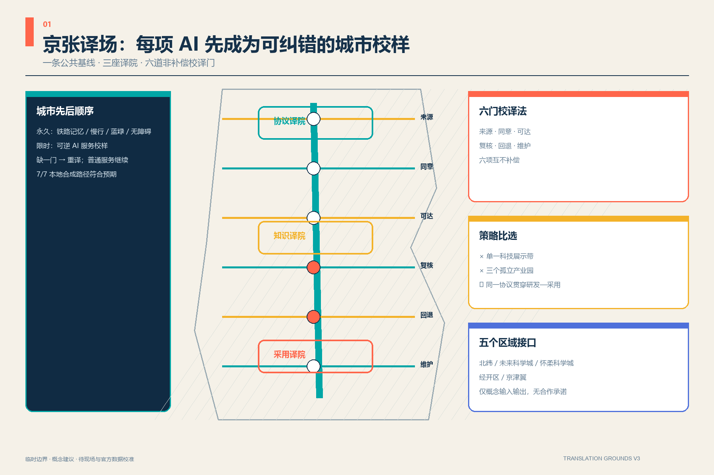
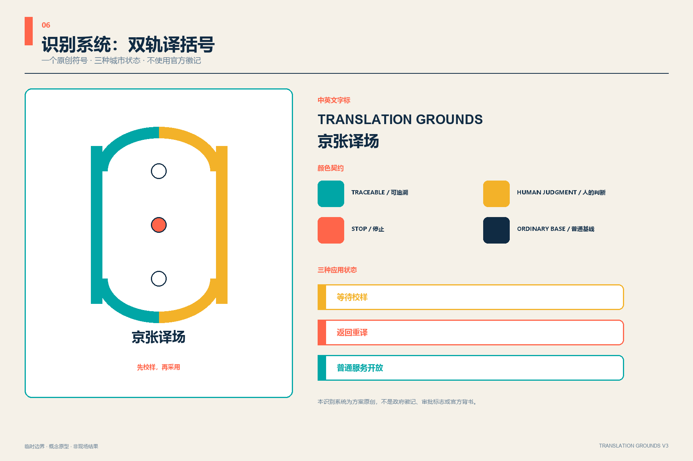
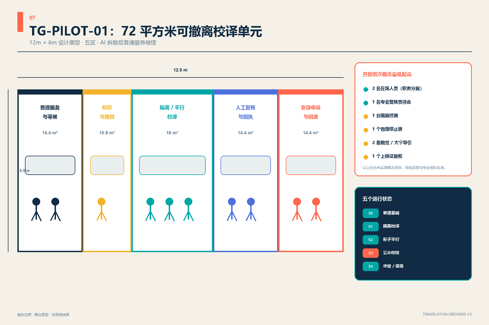
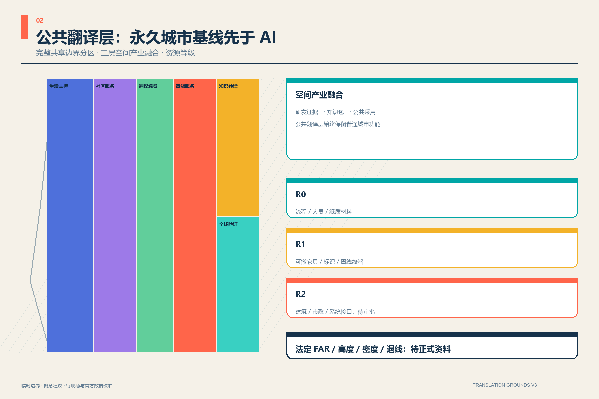
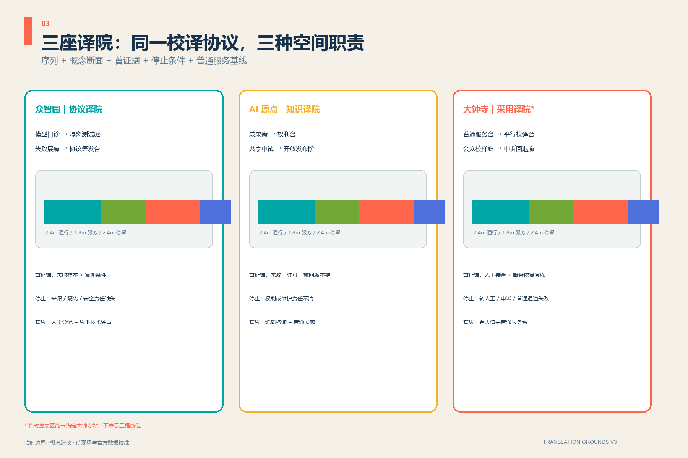
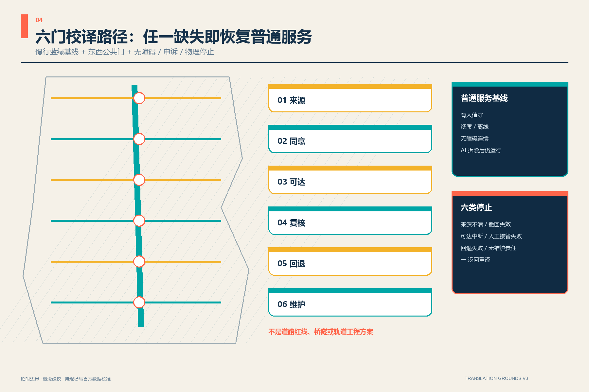
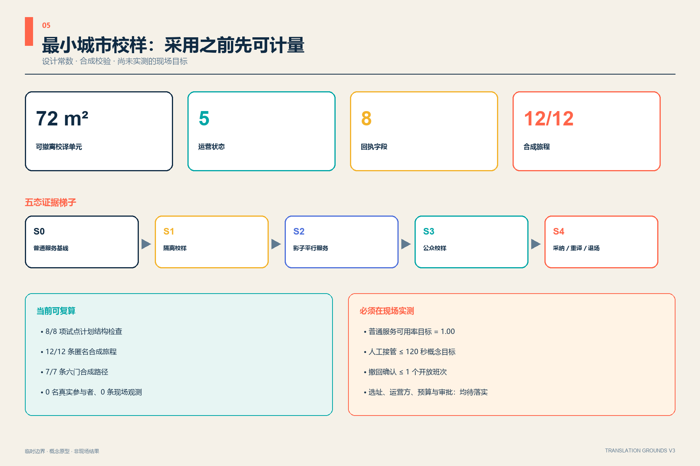
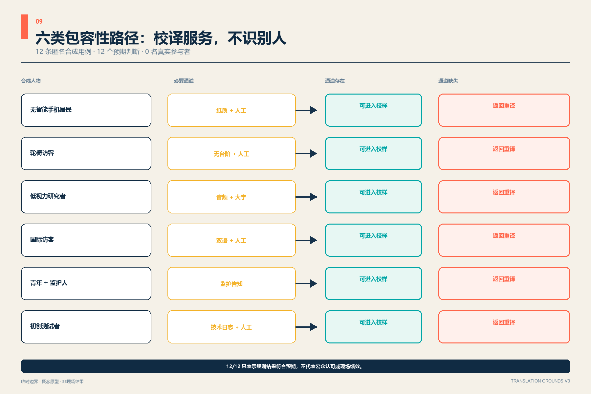

一个清楚的取舍
不做一条由单一科技景观统领的展示带，也不做三个互不相干的 AI 园区。选择以同一套公共校译协议连接“研发—发布—采用”，让失败、撤回和普通服务恢复都能被看见。
五个区域接口
北纬、未来科学城、怀柔科学城、经开区、京津冀。当前只定义概念输入与输出，不宣称合作已经发生。
一条公共基线、三座译院、六道非补偿校译门。方案不把 AI 当作必须成功的城市地标，而把来源、同意、可达、复核、回退和维护变成空间准入条件。
概念提案 · 临时边界 · 非工程线位
不做一条由单一科技景观统领的展示带，也不做三个互不相干的 AI 园区。选择以同一套公共校译协议连接“研发—发布—采用”，让失败、撤回和普通服务恢复都能被看见。
北纬、未来科学城、怀柔科学城、经开区、京津冀。当前只定义概念输入与输出，不宣称合作已经发生。


每个开放班次概念最低两人在场并职责分离；供应方不能批准自己的六门。120 秒接管是未实测目标，不是服务承诺。
模型门诊 → 隔离测试庭 → 失败展廊 → 协议签发台
首证据：失败样本与复测条件
停止：来源、隔离或安全责任缺失
基线：人工登记与线下技术评审
成果街 → 权利台 → 共享中试 → 开放发布阶
首证据：来源—许可—撤回版本链
停止：权利或维护责任不清
基线：纸质咨询与普通展廊
普通服务台 → 平行校译台 → 公众校样庭 → 申诉回退廊
首证据：人工接管与恢复演练
停止：接管、申诉或普通通道失败
基线：有人值守普通服务台
* 临时重点区尚未锚定大钟寺站；这是概念职责，不是已确认站城方案。
五个区域概念接口，只定义输入与输出；不把未发生的合作写成事实。
总览地图、用地分区、交通慢行、蓝绿公共空间、建筑与更新项目共享同一临时边界和复算方法。
三座译院以序列、断面、证据、停止条件和普通服务基线达到详细设计表达。
AI 场景：十二个场景共用六门校译协议。核心指标：来自 metrics.json 与 GeoJSON 公式。来源：公开征集材料和仓库正式资料。假设：边界、控规、权属、文保、市政、运营与授权均逐项登记。自检状态：以 self_check.json 为准。




